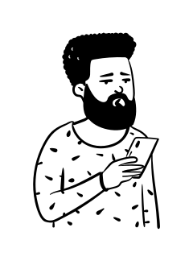

Q1
台灣的現況如何?
2018
台灣遭國外假資訊攻擊的程度曾居世界第一 ?
根據瑞典哥登堡⼤學 V-Dem 的調查計畫，2018年全球國家中，台灣接收來⾃外國政府或其代理⼈的假資訊最為嚴重。台灣除了登上冠軍，其調查結果分數與其餘國家相差甚⼤，意味多數領域專家⼀致認同台灣遭假資訊侵害的程度嚴重。
台灣新聞信任度排名倒數
根據 2020 發布的「數位新聞報告」，全球的新聞信任度有整體下滑勢態。台灣因媒體充斥著不實的訊息，在全球 40 個國家排名中竟位居倒數第三，只略⾼於法國和韓國。

台灣民眾真古椎
報導說一是一


資料來源: 國發會 「108 年個人家戶數位機會報告」
根據國發會 2020 發布的「108年個人家戶數位機會調 報告」12歲以上台灣人有 26.8% 會轉發無法斷定真假的報導和訊息，更有高達 44.9%的台灣網路族群收到無法判斷真偽訊息時，不會去進行查證。
Q2
為什麼難以阻止假新聞?
研究顯示
假新聞的傳播比真消息更快，案例中真實資訊要花費錯誤流言 6 倍的時間，才能觸及到 1,500 位讀者。
資料來源: 假消息在 Twitter 傳播速度快於真消息，該歸功於人 《科學》
Q3
有哪些案例呢?

有影沒影? Deepfake 究竟造成了什麼影響?
#影音造假
圖文製作: 程至榮
近年來，閱聽人所會接觸到的造假影音已經不再只是改個標題、旁白這麼單純了，換臉技術的盛行讓偽造影片更難以辨識。在這種情況下，人們是否還能正確分辨出偽造影片呢 ?

眼見不為憑，標題停看聽
#標題造假
圖文製作: 范鐘元
標題可作為內文的前導、重點的摘要。然而，卻也是煽動恐慌、製造動盪的trouble maker。面對鋪天蓋地的資訊量，你有沒有辨別媒體好壞的能力呢?

看圖說故事，就你在搞事
#圖片造假
圖文製作: 林芸秀
相較於文字，透過圖片呈現的假消息傳播的更快速且不易查證。在假資訊氾濫的時代，到底該如何避免自己被造假圖片欺騙呢？
【有影沒影?】 Deepfake 究竟造成了什麼影響?
#影音造假
圖文製作: 程至榮
近年來，閱聽人所會接觸到的造假影音已經不再只是改個標題、旁白這麼單純了，換臉技術的盛行讓偽造影片更難以辨識。在這種情況下，人們是否還能正確分辨出偽造影片呢 ?
【假新聞糾察隊】眼見不為憑，標題停看聽
#標題造假
圖文製作: 范鐘元
標題可作為內文的前導、重點的摘要。然而，卻也是煽動恐慌、製造動盪的trouble maker。面對鋪天蓋地的資訊量，你有沒有辨別媒體好壞的能力呢?
【假新聞糾察隊】看圖說故事，就你在搞事
#圖片造假
圖文製作: 林芸秀
透過圖片呈現的假消息相較文字訊息，傳播地更快速且不易查證，在假資訊氾濫的時代，到底該如何避免自己被造假圖片欺騙呢？
Q4
我們該注意什麼?
檢視來源，
確保資訊公開透明
檢視新聞的生產履歷，來路不明的資訊你也照單全收?
閱讀報導的時候一定要看清楚以下資訊，缺少任何一項都會降低報導的可信度。
- 媒體背景資訊
- 誰是撰寫者
- 消息出自何處
- 事發時間地點